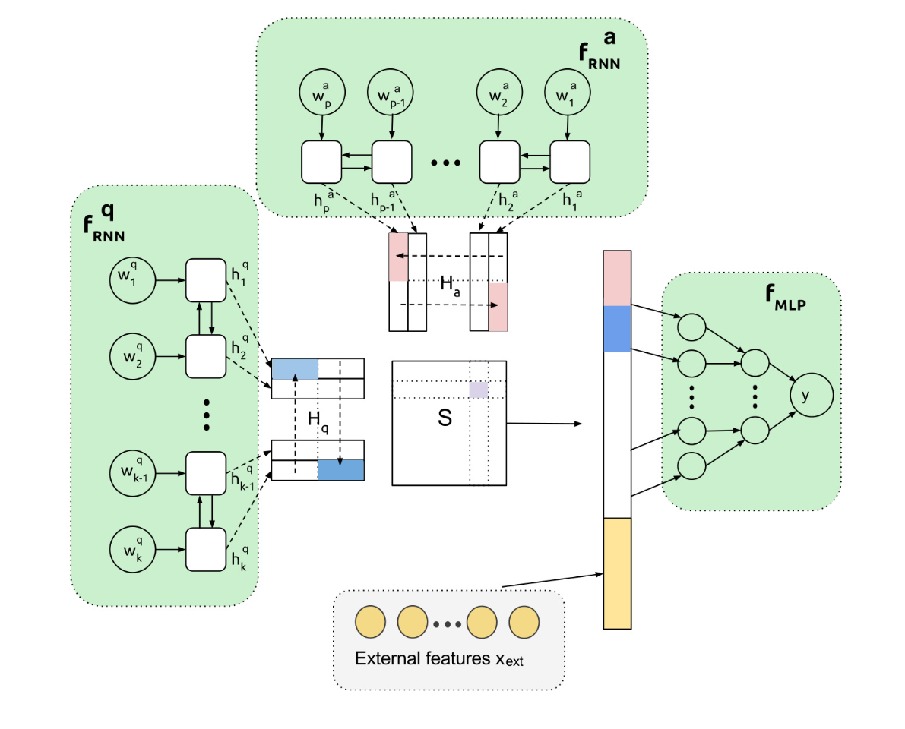

European Chapter of the Association for
Computational Linguistics
Luca Ambrosini
4 july 2017
Valencia
PRHLT Intern
- Introduction
- EACL Best papers
- NLP @ ISIN
- Introduction
- EACL Best papers
- NLP @ ISIN
Natural Language Processing ?!
Natural language processing (NLP) is a field of computer science, artificial intelligence and computational linguistics concerned with the interactions between computers and human (natural) languages
Natural Language Processing ?!
NLP and CL are two sides of the same coin. The NLP focus is practice while CL is a science (theory).
NLP’s Applications
- Machine translation
- Intelligent assistants
- Chat bots
- Text analysis
- ...
Approaches?
- Machine learning algorithms applied to text. The same as in machine vision, market forecast and so on.
- Hand-crafted rules manually formulated and compiled by linguists or knowledge engineers.
Machine learning?
- High recall (wider coverage)
- Need huge labeled data
Hand crafted rules
- High precision (more accurate)
- Need skilled linguists
- Introduction
- EACL Best papers
- NLP @ ISIN
If You Can’t Beat Them Join Them:
Answer Reranking
Given a list of candidate answers to a question, order the answers according to their relevance to the question.
Community Question Answering
New State of the Art
Gated End-to-End Memory Networks
fliu3@student.unimelb.edu.au
julien.perez@xrce.xerox.com
Dialog state tracking, a machine reading approach using Memory Networks
julien.perez@xrce.xerox.com
fliu3@student.unimelb.edu.au
Bag of Tricks for Efficient Text Classification
Armand Joulin @ FAIR
Edouard Grave @ FAIR
Piotr Bojanowski @ FAIR
Tomas Mikolov @ FAIR
Text Classification
- Web search
- Information ranking
- Information retrieval
- Document classification
600x speed up
- Amazon product dataset
- 95.7% accuracy obtained in 7h with Conneau et al. (2016)
- 94.6% accuracy obtained in 10s with fastText (2016)
References:
- https://www.linkedin.com/pulse/overview-natural-language-processing-wei-li
- Schema less but model based thing definition